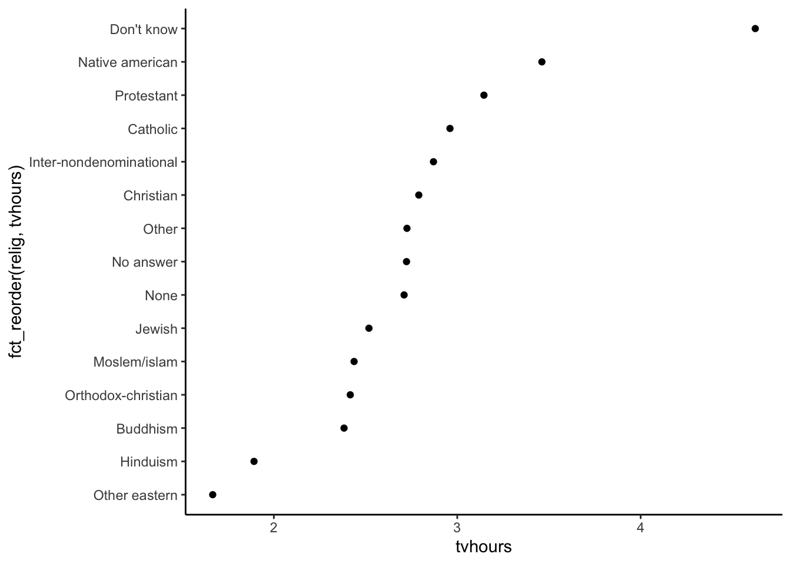
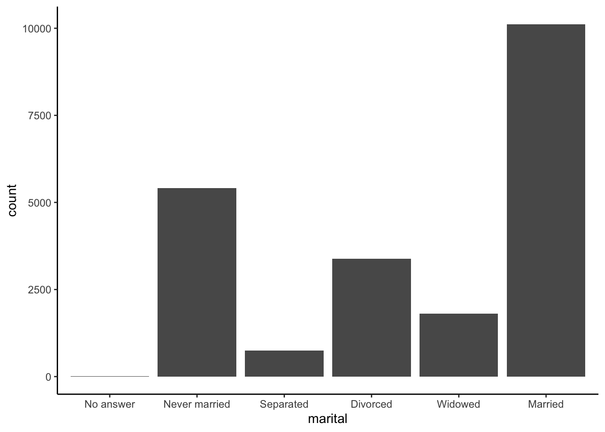
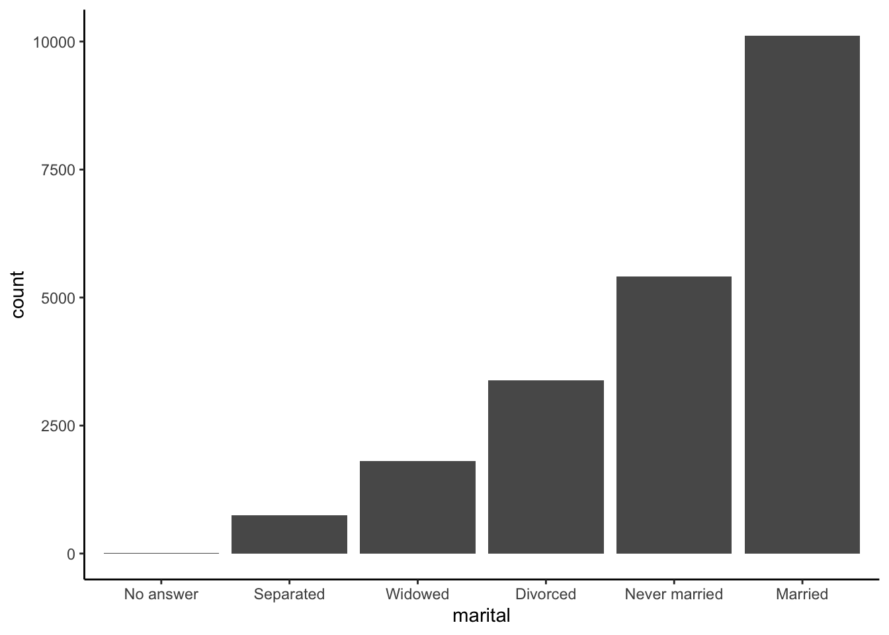

months <- c("Mar", "Dec", "Jan", "Apr", "Jul")Wrangling: factors
Learning goals
After this lesson, you should be able to:
- Recode and manage factors using the
forcatspackage
You can download a template Quarto file to start from here. Save this template within the following directory structure:
your_course_folderwrangling_data_typescode05-data-types-1.qmd06-data-types-2.qmd07-data-types-3.qmd
Factors
Creating factors
In R, factors are made up of two components: the actual values of the data and the possible levels within the factor. Creating a factor requires supplying both pieces of information.
However, if we were to sort this vector, R would sort this vector alphabetically.
# alphabetical sort
sort(months)[1] "Apr" "Dec" "Jan" "Jul" "Mar"We can fix this sorting by creating a factor version of months. The levels argument is a character vector that specifies the unique values that the factor can take. The order of the values in levels defines the sorting of the factor.
months_fct <- factor(months, levels = month.abb) # month.abb is a built-in variable
months_fct[1] Mar Dec Jan Apr Jul
Levels: Jan Feb Mar Apr May Jun Jul Aug Sep Oct Nov Decsort(months_fct)[1] Jan Mar Apr Jul Dec
Levels: Jan Feb Mar Apr May Jun Jul Aug Sep Oct Nov DecWhat if we try to create a factor with values that aren’t in the levels? (e.g., a typo in a month name)
months2 <- c("Jna", "Mar")
factor(months2, levels = month.abb)[1] <NA> Mar
Levels: Jan Feb Mar Apr May Jun Jul Aug Sep Oct Nov DecBecause the NA is introduced silently (without any error or warnings), this can be dangerous. It might be better to use the fct() function in the forcats package instead:
fct(months2, levels = month.abb)Error in `fct()`:
! All values of `x` must appear in `levels` or `na`
ℹ Missing level: "Jna"Exercise: Create a factor version of the following data with the levels in a sensible order.
ratings <- c("High", "Medium", "Low")In the remainder of the exercises and examples, we’ll use a subset of the General Social Survey (GSS) dataset available in the forcats pacakges.
data(gss_cat)Reordering factors
Reordering the levels of a factor can be useful in plotting when categories would benefit from being sorted in a particular way:
relig_summary <- gss_cat %>%
group_by(relig) %>%
summarize(
tvhours = mean(tvhours, na.rm = TRUE),
n = n()
)
ggplot(relig_summary, aes(x = tvhours, y = relig)) +
geom_point() +
theme_classic()
We can use fct_reorder() in forcats.
- The first argument is the factor that you want to reorder the levels of
- The second argument determines how the factor is sorted (analogous to what you put inside
arrange()when sorting the rows of a data frame.)
ggplot(relig_summary, aes(x = tvhours, y = fct_reorder(relig, tvhours))) +
geom_point() +
theme_classic()
For bar plots, we can use fct_infreq() to reorder levels from most to least common. This can be combined with fct_rev() to reverse the order (least to most common):
gss_cat %>%
ggplot(aes(x = marital)) +
geom_bar() +
theme_classic()
gss_cat %>%
mutate(marital = marital %>% fct_infreq() %>% fct_rev()) %>%
ggplot(aes(x = marital)) +
geom_bar() +
theme_classic()
Modifying factor levels
We talked about reordering the levels of a factor–what about changing the values of the levels themselves?
For example, the names of the political parties in the GSS could use elaboration (“str” isn’t a great label for “strong”) and clean up:
gss_cat %>% count(partyid)# A tibble: 10 × 2
partyid n
<fct> <int>
1 No answer 154
2 Don't know 1
3 Other party 393
4 Strong republican 2314
5 Not str republican 3032
6 Ind,near rep 1791
7 Independent 4119
8 Ind,near dem 2499
9 Not str democrat 3690
10 Strong democrat 3490We can use fct_recode() on partyid with the new level names going on the left and the old levels on the right. Any levels that aren’t mentioned explicitly (i.e., “Don’t know” and “Other party”) will be left as is:
gss_cat %>%
mutate(
partyid = fct_recode(partyid,
"Republican, strong" = "Strong republican",
"Republican, weak" = "Not str republican",
"Independent, near rep" = "Ind,near rep",
"Independent, near dem" = "Ind,near dem",
"Democrat, weak" = "Not str democrat",
"Democrat, strong" = "Strong democrat"
)
) %>%
count(partyid)# A tibble: 10 × 2
partyid n
<fct> <int>
1 No answer 154
2 Don't know 1
3 Other party 393
4 Republican, strong 2314
5 Republican, weak 3032
6 Independent, near rep 1791
7 Independent 4119
8 Independent, near dem 2499
9 Democrat, weak 3690
10 Democrat, strong 3490To combine groups, we can assign multiple old levels to the same new level (“Other” maps to “No answer”, “Don’t know”, and “Other party”):
gss_cat %>%
mutate(
partyid = fct_recode(partyid,
"Republican, strong" = "Strong republican",
"Republican, weak" = "Not str republican",
"Independent, near rep" = "Ind,near rep",
"Independent, near dem" = "Ind,near dem",
"Democrat, weak" = "Not str democrat",
"Democrat, strong" = "Strong democrat",
"Other" = "No answer",
"Other" = "Don't know",
"Other" = "Other party"
)
)# A tibble: 21,483 × 9
year marital age race rincome partyid relig denom tvhours
<int> <fct> <int> <fct> <fct> <fct> <fct> <fct> <int>
1 2000 Never married 26 White $8000 to 9999 Independe… Prot… Sout… 12
2 2000 Divorced 48 White $8000 to 9999 Republica… Prot… Bapt… NA
3 2000 Widowed 67 White Not applicable Independe… Prot… No d… 2
4 2000 Never married 39 White Not applicable Independe… Orth… Not … 4
5 2000 Divorced 25 White Not applicable Democrat,… None Not … 1
6 2000 Married 25 White $20000 - 24999 Democrat,… Prot… Sout… NA
7 2000 Never married 36 White $25000 or more Republica… Chri… Not … 3
8 2000 Divorced 44 White $7000 to 7999 Independe… Prot… Luth… NA
9 2000 Married 44 White $25000 or more Democrat,… Prot… Other 0
10 2000 Married 47 White $25000 or more Republica… Prot… Sout… 3
# ℹ 21,473 more rowsWe can use fct_collapse() to collapse many levels:
gss_cat %>%
mutate(
partyid = fct_collapse(partyid,
"Other" = c("No answer", "Don't know", "Other party"),
"Republican" = c("Strong republican", "Not str republican"),
"Independent" = c("Ind,near rep", "Independent", "Ind,near dem"),
"Democrat" = c("Not str democrat", "Strong democrat")
)
) %>%
count(partyid)# A tibble: 4 × 2
partyid n
<fct> <int>
1 Other 548
2 Republican 5346
3 Independent 8409
4 Democrat 7180Exercises: Using the gss_cat dataset, try the following:
- Make a plot that shows the relationship between marital status (
marital) andagein a way that makes a trend clear. - Make a plot that shows the relationship between religion followed (
relig) and incomerincome. Combine income categories for better readability.
Project work time
Get together with your tentative project teammates.
- If you are satisfied with your team composition, fill in your team details on this Google Doc.
- If you would like to continue searching for a team, you can do so today. Look through the Google Doc linked above as it’s being filled out to get a sense for what team you’d like to join.
If you have already located a dataset relevant to one or more of your research questions and can read it into R, start to explore that data in working towards Project Milestone 2.
Otherwise, peruse the Tidy Tuesday GitHub repository to find a dataset that is roughly (perhaps very roughly) related to your project domain. Start exploring this data in working towards Project Milestone 2.
- Why am I suggesting Tidy Tuesday? Sometimes data that aren’t perfectly aligned with our interests can still give useful context. Being able to provide meaning from “imperfect” data is a very useful skill because imperfect data are so common.